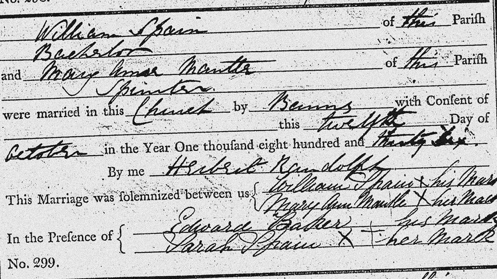
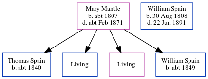

Mary Ann Spain (née Mantle) c1807 - c1871
[ Home ] | [ Calendar ] | [ Surnames Index ] | [ Errors ] | [ Family History ]Mary Mantle, the wife of William Spain (the three times great-uncle of Nigel Horne), was born in Eastry, Kent, England c. 18071,2 and married William (an agricultural labourer with whom she had 4 children: Thomas, Charles, Mary Ann and William, along with 2 surviving children) at St Nicholas, Ash, Kent, England on 12 Oct 18365.
During her life, she was living on Knell Lane in Ash on 6 Jun 18417, at New Street in Ash in 18511 and on 30 Mar 18516, and in Ash in 18612.
She died c. Feb 1871 in Eastry3,4 and was buried in Ash on 19 Mar 1871.
Children
- Thomas was born c. 1840
- William was born c. 1849
Citations
- 1851 England Census Online publication - Provo, UT, USA: The Generations Network, Inc., 2005.Original data - Census Returns of England and Wales, 1851. Kew, Surrey, England: The National Archives of the UK (TNA): Public Record Office (PRO), 1851. Data imaged from the National
- 1861 England Census Online publication - Provo, UT, USA: The Generations Network, Inc., 2005.Original data - Census Returns of England and Wales, 1861. Kew, Surrey, England: The National Archives of the UK (TNA): Public Record Office (PRO), 1861. Data imaged from the National
- England & Wales deaths 1837-2007 - Findmypast
- England & Wales deaths 1837-2007 - Findmypast
- Kent, Canterbury Archdeaconry Marriages - Findmypast
- 1851 England, Wales & Scotland Census - Findmypast (was age 44 and the wife of the head of the household)
- 1841 England, Wales & Scotland Census - Findmypast (was age 30)
Media
William Spain - Mary Mantle - marriage

Canterbury Marriage Banns Transcription - GBPRS-CANT-M-94093137-1
1851 England, Wales & Scotland Census Transcription - GBC-1851-0005905339
1841 England, Wales & Scotland Census Transcription - GBC-1841-0013912216
Canterbury Marriages Transcription - GBPRS-CANT-M-97181232-1
England Marriages 1538-1973 - R_848137766
1841 England, Wales & Scotland Census - GBC/1841/0013912217
England & Wales deaths 1837-2007 - BMD/D/1865/4/HS/001312/036
England & Wales deaths 1837-2007 - BMD/D/1871/1/AZ/000345/126
Kent marriages and banns - GBPRS/CANT/M/97181232/2
England Marriages 1538-1973 - R_848137766/2
Family Tree
Map
Generated by ged2site. Last updated on Jul 3, 2024
Known Issues
Burial date (19 Mar 1871) has no citations